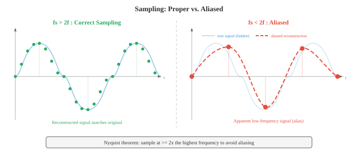
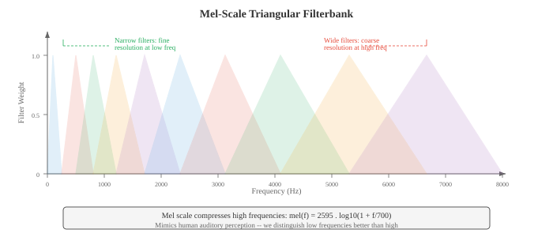

数字信号处理¶
数字信号处理将原始音频波形转换为结构化表示，机器学习模型可以从中学习。本文涵盖声音物理学、采样与量化、傅里叶变换（DFT、FFT）、语谱图、梅尔滤波器组、MFCC 和加窗，以及所有语音和音频 AI 所需的特征提取流水线。
-
声音是一种通过介质（空气、水、固体）传播的压力波。振动物体（声带、吉他弦、扬声器纸盆）推拉空气分子，产生交替的高压区域（压缩）和低压区域（稀疏）。
-
这些压力变化以大约 343 m/s 的速度在空气中向外传播，到达你的耳朵后，使耳膜振动并转换为神经信号。
-
可以把声音想象成向平静的水面投下一块石头：石头是振动源，涟漪是压力波，水面漂浮的软木塞就是麦克风或耳膜，它响应着波的到来。
-
软木塞上下浮动的幅度是振幅，每秒浮动的次数是频率，波到达时软木塞是处于浮动的最高点还是最低点则是相位。
-
波形是压力（或电压，在麦克风将声音转换为电信号后）随时间变化的曲线图。最简单的波形是纯音，即单一正弦波：
-
其中：
- \(A\) 是振幅（偏离零点的最大偏差，决定响度），
- \(f\) 是以 Hz 为单位的频率（每秒周期数，决定音高），
- \(\phi\) 是以弧度为单位的相位（波的时间偏移）。
-
周期 \(T = 1/f\)，是一个完整周期持续的时长。

-
振幅决定了感知到的响度。振幅加倍，功率变为四倍（因为功率与振幅的平方成正比）。
-
人耳的听觉范围覆盖极大的振幅跨度，因此我们使用对数刻度：分贝（dB）。声压级的计算方式为：
-
其中 \(A_\text{ref}\) 是参考振幅（通常取听阈，\(20 \mu\text{Pa}\)）。耳语约为 30 dB，正常对话 60 dB，摇滚音乐会 110 dB。每增加 6 dB，振幅大约翻倍；每增加 10 dB，感知响度大约翻倍。此处的对数与第 03 章中的对数函数相同。
-
频率决定音高。低频（20–250 Hz）听起来低沉；高频（2000–20000 Hz）听起来尖锐。人耳听觉范围大致为 20 Hz 到 20 kHz。音乐会标准音 A 为 440 Hz。频率加倍，音高升高一个八度。
-
大多数自然声音不是纯音，而是许多频率的复杂混合——这就是为什么钢琴和小提琴演奏同一个音符时听起来不同：它们共享相同的基频，但谐波（基频的整数倍）及其相对振幅（音色）不同。
-
相位决定了波从其周期中的哪个起点开始。两个振幅和频率相同但相位不同的波可以发生相长干涉（相位对齐，振幅相加）或相消干涉（相位相反，振幅抵消）。
-
相位在立体声音频和波束成形中至关重要，但在许多语音处理流水线中基本上被丢弃，因为人类对音高和音色的感知大多与相位无关。
-
现实世界的音频信号是时间的连续函数，但计算机处理的是离散数值。采样通过以固定间隔测量信号值，将连续信号转换为离散序列。
-
采样率 \(f_s\) 是每秒的测量次数。CD 音频使用 \(f_s = 44{,}100\) Hz；电话通信使用 8000 Hz；现代语音模型通常使用 16000 Hz。
-
奈奎斯特-香农采样定理指出：当且仅当采样率至少是信号中最高频率的两倍时，连续信号才能从其样本中完美重建：
-
频率 \(f_s / 2\) 称为奈奎斯特频率。如果信号中包含高于奈奎斯特频率的频率成分，这些频率会折叠回有效范围内，表现为虚假的低频成分。这种现象称为混叠。混叠是不可逆的：一旦发生，就无法从样本中恢复原始信号。
-
混叠的日常类比是电影中的马车轮效应：车轮转速刚好高于帧率时，看起来像是在缓慢地倒转，因为摄像机对旋转的采样不足。在音频中，一个 15 kHz 的音调以 16 kHz 采样（\(f_\text{奈奎斯特} = 8\) kHz）时，会混叠为 \(16 - 15 = 1\) kHz，一个完全不同的音高。

-
为防止混叠，抗混叠滤波器（一个低通滤波器）在采样前滤除所有高于 \(f_s/2\) 的频率。这一步由模数转换器（ADC）硬件在信号数字化之前完成。
-
量化将每个连续取值的样本映射到有限电平集合中的最近值。一个 \(n\) 位量化器有 \(2^n\) 个电平。CD 音频使用 16 位量化（\(2^{16} = 65{,}536\) 个电平）；电话通信通常使用 8 位配合 \(\mu\) 律或 A 律压扩（一种非线性映射，为小振幅分配更多电平，以匹配人类感知）。量化会引入量化噪声，这是一种舍入误差，其方差为 \(\Delta^2/12\)，其中 \(\Delta\) 是相邻电平之间的步长。
-
时域分析直接从波形中提取特征，无需变换到其他域。这些特征简单、计算快速，能够捕捉信号的基本性质。
-
能量衡量一帧（共 \(N\) 个样本）的整体响度：
-
语音段能量高；静音段能量低。能量是第 01 章中平方 \(\ell_2\) 范数在信号向量上的应用。
-
过零率（ZCR）统计一帧内信号改变符号的次数：
-
高 ZCR 表明高频成分或噪声；低 ZCR 表明低频成分或浊音（声带周期性振动时）。ZCR 是一种粗略的频率估计方法：一个 \(f\) Hz 的纯音每秒过零 \(2f\) 次。
-
自相关衡量信号与其延迟副本之间的相似度：
-
在延迟 \(k = 0\) 处，自相关等于能量。对于周期信号，自相关在等于周期及其整数倍的延迟处出现峰值。这是基音检测的标准技术：找出 \(R[k]\) 在 \(k=0\) 之后的第一个显著峰值，则基音频率为 \(f_s / k_\text{峰值}\)。自相关与第 01 章的点积相关：\(R[k]\) 是信号与其 \(k\) 位移版本的点积。
-
频域分析揭示信号的频谱内容，这些信息在波形中不可见。核心工具是离散傅里叶变换（DFT），它将 \(N\) 个样本的信号分解为 \(N\) 个复数值的频率分量：
-
每个 \(X[k]\) 是一个复数，其幅度 \(|X[k]|\) 给出频率 \(f_k = k \cdot f_s / N\) Hz 处的振幅，相位 \(\angle X[k]\) 给出相位偏移。DFT 是从时域基（单位脉冲）到频域基（复指数）的基变换，这是第 02 章基概念的直接应用。DFT 可以写为矩阵乘法 \(\mathbf{X} = W \mathbf{x}\)，其中 \(W\) 是 \(N \times N\) 的 DFT 矩阵，其元素为 \(W_{kn} = e^{-j2\pi kn/N}\)。
-
快速傅里叶变换（FFT）是一种以 \(O(N \log N)\) 次运算计算 DFT 的算法（而非朴素的 \(O(N^2)\)），其原理是将问题递归地拆分为偶数索引和奇数索引的子问题（库利-图基算法）。这种加速使得实时频谱分析成为可能。FFT 是整个计算领域最重要的算法之一。
-
功率谱 \(|X[k]|^2\) 显示能量在各频率上的分布。幅度谱 \(|X[k]|\) 显示振幅。绘制这些谱图可以揭示哪些频率主导了信号：元音在基频的整数倍处有强谐波；擦音（如"s"）在宽高频范围内有能量分布。
-
语谱图是信号频率内容随时间变化的可视化表示。它是将信号切分成短的、重叠的帧，对每帧计算 FFT，然后将得到的幅度谱并排放置。横轴是时间，纵轴是频率，每个点的颜色（或亮度）代表幅度。语谱图是音频处理中最重要的单一可视化工具。

- 梅尔刻度是一种感知频率刻度，反映人类对音高的感知方式。人类将频率的等比率感知为音高的等间隔（正如我们将强度的等比率感知为响度的等间隔）。在约 1000 Hz 以下，梅尔刻度近似线性；在 1000 Hz 以上，它变为近似对数：
-
其逆变换为 \(f = 700(10^{m/2595} - 1)\)。梅尔刻度解释了为什么音乐中的半音在对数频率轴上等间距排列：A4（440 Hz）到 A5（880 Hz）和 A5 到 A6（1760 Hz）听起来都是"向上一个八度"，尽管以 Hz 为单位的间隔分别是 440 和 880。
-
梅尔滤波器组是一组在梅尔刻度上均匀分布的三角形带通滤波器。每个滤波器覆盖一个频带，对该频带内的频谱能量进行求和，产生一个数值。典型的语音系统使用 40–80 个梅尔滤波器。低频滤波器窄（在人类感知敏感的频率分辨率高的区域），高频滤波器宽（在人类不敏感的低分辨率区域）。这模仿了人耳耳蜗的频率分辨率。

-
梅尔频率倒谱系数（MFCC）是语音和音频的经典特征表示。它们将梅尔谱压缩为少量去相关化的系数，捕捉谱包络的形状（编码声道配置，从而编码语音身份），同时丢弃精细的谱细节（编码音高和相位）。
-
MFCC 流水线：
- 预加重：应用一阶高通滤波器 \(y[n] = x[n] - \alpha x[n-1]\)（通常 \(\alpha = 0.97\)）以提升被声道衰减的高频成分。
- 分帧：将信号切分为重叠的帧（通常 25 ms 长，步进 10 ms）。
- 加窗：对每帧乘以窗口函数（汉明窗）以减少频谱泄漏（见下文）。
- FFT：计算每帧加窗后的功率谱。
- 梅尔滤波器组：对功率谱应用三角形梅尔滤波器组，得到梅尔频带能量。
- 对数：对梅尔频带能量取对数。对数压缩动态范围，并将乘法（频谱分量之间）转换为加法，匹配人类响度感知。
- DCT：对对数梅尔能量应用离散余弦变换。DCT 对梅尔频带进行去相关化（因为相邻频带高度相关）并将能量压缩到前几个系数中。保留前 13 个系数（MFCC-0 至 MFCC-12）。

-
第 7 步中的 DCT 本质上是"频谱的傅里叶变换"（因此得名倒谱 cepstrum = spectrum 的字母重排）。低阶倒谱系数捕捉宽泛的谱形状（声道谐振，称为共振峰），而高阶系数捕捉精细的谱细节（音高谐波）。通过只保留前 13 个系数，我们保留了共振峰信息并丢弃了音高细节。
-
Delta 和 delta-delta MFCC（MFCC 的一阶和二阶时间导数，通过相邻帧之间的有限差分计算）捕捉谱形状的动态变化，增加时间上下文。完整的 MFCC 特征向量通常是 39 维的：13 个静态 + 13 个 delta + 13 个 delta-delta。
-
现代神经网络模型（第 06 章）已在很大程度上用学习到的特征取代了 MFCC：对数梅尔语谱图（第 6 步的输出，跳过 DCT）是深度学习 ASR 和音频分类的标准输入。模型学习自己的去相关化。尽管如此，MFCC 在低资源场景、经典 ML 流水线以及理解信号处理基础方面仍然很重要。
-
加窗是在计算 FFT 之前对信号帧乘以平滑窗口函数的过程。不加窗时，FFT 假设帧无限重复；帧的突然开始和结束会创建人工的不连续性，使能量扩散到所有频率，这种伪影称为频谱泄漏。
-
矩形窗 \(w[n] = 1\) 对所有 \(n\)：无渐减，泄漏最大，但主瓣最宽（在给定帧长下频率分辨率最佳）。实践中很少使用。
-
汉明窗：\(w[n] = 0.54 - 0.46 \cos(2\pi n / (N-1))\)。在边缘处渐减到接近零，大大减少泄漏。是语音处理的标准选择。
-
汉宁窗（也称为 Hanning 窗）：\(w[n] = 0.5 - 0.5 \cos(2\pi n / (N-1))\)。在边缘处精确渐减到零。与汉明窗非常相似，但旁瓣抑制略好。
-
布莱克曼窗：\(w[n] = 0.42 - 0.5 \cos(2\pi n / (N-1)) + 0.08 \cos(4\pi n / (N-1))\)。旁瓣抑制更好，但主瓣更宽（频率分辨率更差）。当旁瓣伪影特别严重时使用。
-
存在一个根本性的权衡：泄漏越少的窗口，主瓣越宽，意味着它们无法分辨两个间隔很近的频率。这就是频谱分辨率与泄漏的权衡，是第 03 章不确定原理的结果。
-
重叠相加（OLA）是一种从加窗、处理后的帧重建信号的技术。帧之间有重叠（通常 50–75%），处理后将加窗后的输出相加。如果窗口和重叠选择得当（例如，汉宁窗配合 50% 重叠），重叠的窗口相加为常数，可实现完美重建。这对任何基于帧的音频修改（降噪、变调、变速）都至关重要。
-
短时傅里叶变换（STFT）是语谱图背后的正式框架。它对信号的每个加窗帧应用 DFT：
-
其中 \(m\) 是帧索引，\(H\) 是步进大小（连续帧之间的样本数），\(w[n]\) 是窗口函数，\(N\) 是 FFT 大小。输出是一个二维复数值矩阵：信号的时频表示。
-
STFT 体现了根本的时频权衡：
- 长帧（大 \(N\)）：频率分辨率高（能区分间隔很近的频率），但时间分辨率差（无法精确定位频率何时变化）。
- 短帧（小 \(N\)）：时间分辨率高，但频率分辨率差。
- 时间分辨率和频率分辨率的乘积有下界：\(\Delta t \cdot \Delta f \geq \frac{1}{4\pi}\)。这是加伯极限，是物理中海森堡不确定原理在信号处理中的类比。
-
典型语音 STFT 参数：25 ms 帧长（在 16 kHz 下 \(N = 400\)），10 ms 步进（\(H = 160\)），汉明窗，512 点 FFT（从 400 进行零填充以提高效率和频谱插值平滑度）。
-
滤波通过放大某些频率和衰减其他频率来修改信号的频率内容。滤波器是一个接受输入信号并产生输出信号的系统。滤波器由其频率响应 \(H(f)\) 表征，它描述了每个频率上所施加的增益和相位偏移。
-
低通滤波器：通过低于截止频率 \(f_c\) 的频率，衰减高于 \(f_c\) 的频率。用于去除高频噪声和细节。采样前的抗混叠滤波器就是低通滤波器。
-
高通滤波器：通过高于 \(f_c\) 的频率，衰减低于 \(f_c\) 的频率。用于去除低频隆隆声和直流偏移。MFCC 提取中的预加重滤波器（\(y[n] = x[n] - 0.97 x[n-1]\)）就是一个简单的高通滤波器。
-
带通滤波器：通过范围 \([f_1, f_2]\) 内的频率，衰减范围外的频率。梅尔滤波器组中的每个三角形就是一个带通滤波器。
-
带阻（陷波）滤波器：衰减特定的窄频范围。用于去除特定干扰（例如 50/60 Hz 的电源线嗡嗡声）。
-
有限冲激响应（FIR）滤波器将每个输出样本计算为当前和过去输入样本的加权和：
-
权重 \(b_k\) 是滤波器系数（也称为抽头）。滤波器的阶数为 \(M\)。FIR 滤波器始终稳定（输出不会发散），并且可以设计为具有完美的线性相位（所有频率的延迟相同，从而保持波形形状）。其缺点是实现陡峭的截止需要大量抽头（高 \(M\)），增加了计算量。输出是输入与系数向量的卷积，正是第 06 章中的一维卷积运算。
-
无限冲激响应（IIR）滤波器使用反馈：输出既依赖于过去的输入，也依赖于过去的输出：
-
反馈项 \(a_k\) 创建了一个递归结构，其冲激响应理论上持续无限长。IIR 滤波器可以用比 FIR 滤波器少得多的系数实现陡峭的截止，但可能不稳定（如果传递函数的极点位于单位圆之外，输出将无界增长——这是 \(z\) 变换中的概念）。它们还具有非线性相位，可能使波形形状失真。经典滤波器设计（巴特沃斯、切比雪夫、椭圆滤波器）都是 IIR 的。
-
传递函数通过 \(z\) 变换获得：
-
分子的根称为零点，分母的根称为极点。极零点图完全刻画了滤波器的行为。单位圆附近的极点放大附近的频率；单位圆附近的零点衰减它们。FIR 滤波器只有零点（分母为 1）。这与第 02 章和第 03 章中的特征值和求根概念相联系。
-
卷积定理：时域中的卷积等于频域中的逐元素乘法。这意味着滤波既可以通过将信号与滤波器的冲激响应直接卷积来实现，也可以通过将它们的傅里叶变换相乘再逆变换来实现。对于长滤波器，频域方法（使用 FFT）更快：\(O(N \log N)\) 对比 \(O(NM)\)。
-
逆 STFT（iSTFT）从其 STFT 表示重建时域信号。这对于任何在频域中修改音频的系统（降噪、源分离、语音转换）都至关重要。重建使用重叠相加：
-
分母对窗口重叠进行归一化，确保当合成窗口与分析窗口匹配且重叠足够时实现完美重建。
-
语音 DSP 流水线总结：原始音频以 16 kHz 采样、预加重、切分为 25 ms 的汉明窗帧（步进 10 ms），每帧进行 FFT 变换，通过梅尔滤波器组，进行对数压缩，然后要么保留为对数梅尔特征（用于神经网络模型），要么进行 DCT 变换生成 MFCC（用于经典模型）。整个流水线将一维时域信号转换为适合下游机器学习的二维时频表示，这将是文件 02 的主题。
编程练习（在 CoLab 或 notebook 中完成）¶
-
生成一个正弦波，以不同采样率采样，演示混叠现象。绘制连续信号、正确采样版本和欠采样（混叠）版本的对比图。
import jax.numpy as jnp import matplotlib.pyplot as plt # 参数 f_signal = 5.0 # 5 Hz 信号 duration = 1.0 # 1 秒 # "连续"信号（非常高的采样率） t_cont = jnp.linspace(0, duration, 10000) x_cont = jnp.sin(2 * jnp.pi * f_signal * t_cont) # 正确采样（fs = 50 Hz，远高于奈奎斯特频率 10 Hz） fs_good = 50 t_good = jnp.arange(0, duration, 1.0 / fs_good) x_good = jnp.sin(2 * jnp.pi * f_signal * t_good) # 欠采样（fs = 7 Hz，低于奈奎斯特频率 10 Hz）-> 混叠 fs_bad = 7 t_bad = jnp.arange(0, duration, 1.0 / fs_bad) x_bad = jnp.sin(2 * jnp.pi * f_signal * t_bad) # 混叠后的频率：|f_signal - fs_bad| = |5 - 7| = 2 Hz f_alias = abs(f_signal - fs_bad) x_alias_cont = jnp.sin(2 * jnp.pi * f_alias * t_cont) fig, axes = plt.subplots(3, 1, figsize=(12, 9)) # 图 1：原始信号 axes[0].plot(t_cont, x_cont, color='#3498db', linewidth=1.5, label=f'原始 {f_signal} Hz 信号') axes[0].set_title(f'原始 {f_signal} Hz 信号') axes[0].set_xlabel('时间 (s)'); axes[0].set_ylabel('振幅') axes[0].legend(); axes[0].grid(True, alpha=0.3) # 图 2：正确采样 axes[1].plot(t_cont, x_cont, color='#3498db', linewidth=1, alpha=0.4, label='原始信号') axes[1].stem(t_good, x_good, linefmt='#27ae60', markerfmt='o', basefmt='k-', label=f'以 {fs_good} Hz 采样（高于奈奎斯特频率）') axes[1].set_title(f'正确采样：fs = {fs_good} Hz > 2 x {f_signal} Hz') axes[1].set_xlabel('时间 (s)'); axes[1].set_ylabel('振幅') axes[1].legend(); axes[1].grid(True, alpha=0.3) # 图 3：混叠采样 axes[2].plot(t_cont, x_cont, color='#3498db', linewidth=1, alpha=0.4, label='原始信号') axes[2].stem(t_bad, x_bad, linefmt='#e74c3c', markerfmt='o', basefmt='k-', label=f'以 {fs_bad} Hz 采样（低于奈奎斯特频率）') axes[2].plot(t_cont, x_alias_cont, color='#f39c12', linewidth=1.5, linestyle='--', label=f'混叠信号表现为 {f_alias} Hz') axes[2].set_title(f'混叠采样：fs = {fs_bad} Hz < 2 x {f_signal} Hz') axes[2].set_xlabel('时间 (s)'); axes[2].set_ylabel('振幅') axes[2].legend(); axes[2].grid(True, alpha=0.3) plt.tight_layout(); plt.show() -
计算并可视化由多个正弦波组成的信号的 FFT。显示幅度谱并识别组成频率。
import jax.numpy as jnp import matplotlib.pyplot as plt # 创建复合信号：220 Hz + 440 Hz + 880 Hz（A3 + A4 + A5） fs = 8000 # 8 kHz 采样率 duration = 0.1 # 100 ms t = jnp.arange(0, duration, 1.0 / fs) n_samples = len(t) # 三个频率分量，不同振幅 x = 1.0 * jnp.sin(2 * jnp.pi * 220 * t) + \ 0.6 * jnp.sin(2 * jnp.pi * 440 * t) + \ 0.3 * jnp.sin(2 * jnp.pi * 880 * t) # 计算 FFT X = jnp.fft.fft(x) freqs = jnp.fft.fftfreq(n_samples, d=1.0 / fs) magnitude = jnp.abs(X) / n_samples # 归一化 # 只绘制正频率部分 pos_mask = freqs >= 0 freqs_pos = freqs[pos_mask] mag_pos = magnitude[pos_mask] * 2 # 翻倍以补偿负频率的能量 fig, axes = plt.subplots(2, 1, figsize=(12, 7)) # 时域 axes[0].plot(t * 1000, x, color='#3498db', linewidth=1) axes[0].set_title('复合信号：220 Hz + 440 Hz + 880 Hz') axes[0].set_xlabel('时间 (ms)'); axes[0].set_ylabel('振幅') axes[0].grid(True, alpha=0.3) # 频域 axes[1].plot(freqs_pos, mag_pos, color='#e74c3c', linewidth=1.5) axes[1].set_title('幅度谱（FFT）') axes[1].set_xlabel('频率 (Hz)'); axes[1].set_ylabel('幅度') axes[1].set_xlim(0, 1500) # 标注峰值 for f_peak, amp in [(220, 1.0), (440, 0.6), (880, 0.3)]: axes[1].annotate(f'{f_peak} Hz', xy=(f_peak, amp), fontsize=10, ha='center', va='bottom', color='#9b59b6', arrowprops=dict(arrowstyle='->', color='#9b59b6')) axes[1].grid(True, alpha=0.3) plt.tight_layout(); plt.show() -
在 JAX 中从头构建完整的 MFCC 流水线：预加重、分帧、加窗、FFT、梅尔滤波器组、对数、DCT。可视化梅尔滤波器组和生成的 MFCC 热力图。
import jax import jax.numpy as jnp import matplotlib.pyplot as plt # --- 生成一个合成类语音信号 --- key = jax.random.PRNGKey(42) fs = 16000 duration = 1.0 t = jnp.arange(0, duration, 1.0 / fs) # 模拟浊音语音：基频 + 谐波，振幅衰减 f0 = 150.0 # 基频 x = sum(jnp.sin(2 * jnp.pi * f0 * k * t) / k for k in range(1, 8)) # 添加一些噪声 x = x + 0.1 * jax.random.normal(key, t.shape) x = x / jnp.max(jnp.abs(x)) # 归一化 # --- 第 1 步：预加重 --- alpha = 0.97 x_pre = jnp.concatenate([x[:1], x[1:] - alpha * x[:-1]]) # --- 第 2 步：分帧 --- frame_len = int(0.025 * fs) # 25 ms = 400 个样本 hop_len = int(0.010 * fs) # 10 ms = 160 个样本 n_frames = (len(x_pre) - frame_len) // hop_len + 1 frames = jnp.stack([x_pre[i * hop_len : i * hop_len + frame_len] for i in range(n_frames)]) # --- 第 3 步：汉明窗 --- hamming = 0.54 - 0.46 * jnp.cos(2 * jnp.pi * jnp.arange(frame_len) / (frame_len - 1)) windowed = frames * hamming # --- 第 4 步：FFT --- n_fft = 512 spectra = jnp.fft.rfft(windowed, n=n_fft) power_spectra = jnp.abs(spectra) ** 2 / n_fft # --- 第 5 步：梅尔滤波器组 --- n_mels = 40 f_min, f_max = 0.0, fs / 2.0 def hz_to_mel(f): return 2595 * jnp.log10(1 + f / 700) def mel_to_hz(m): return 700 * (10 ** (m / 2595) - 1) mel_min = hz_to_mel(f_min) mel_max = hz_to_mel(f_max) mel_points = jnp.linspace(mel_min, mel_max, n_mels + 2) hz_points = mel_to_hz(mel_points) freq_bins = jnp.floor((n_fft + 1) * hz_points / fs).astype(jnp.int32) n_freqs = n_fft // 2 + 1 filterbank = jnp.zeros((n_mels, n_freqs)) for m in range(n_mels): f_left = freq_bins[m] f_center = freq_bins[m + 1] f_right = freq_bins[m + 2] # 上升沿 for k in range(int(f_left), int(f_center)): if f_center != f_left: filterbank = filterbank.at[m, k].set((k - f_left) / (f_center - f_left)) # 下降沿 for k in range(int(f_center), int(f_right)): if f_right != f_center: filterbank = filterbank.at[m, k].set((f_right - k) / (f_right - f_center)) # 应用滤波器组 mel_spectra = jnp.dot(power_spectra, filterbank.T) # --- 第 6 步：对数 --- log_mel = jnp.log(mel_spectra + 1e-10) # --- 第 7 步：DCT（第二类） --- n_mfcc = 13 n_mel_channels = log_mel.shape[1] dct_matrix = jnp.zeros((n_mfcc, n_mel_channels)) for i in range(n_mfcc): for j in range(n_mel_channels): dct_matrix = dct_matrix.at[i, j].set( jnp.cos(jnp.pi * i * (j + 0.5) / n_mel_channels) ) mfccs = jnp.dot(log_mel, dct_matrix.T) # --- 可视化 --- fig, axes = plt.subplots(3, 1, figsize=(14, 11)) # 梅尔滤波器组 freq_axis = jnp.linspace(0, fs / 2, n_freqs) for m in range(n_mels): color = '#3498db' if m % 2 == 0 else '#e74c3c' axes[0].plot(freq_axis, filterbank[m], color=color, alpha=0.6, linewidth=0.8) axes[0].set_title(f'梅尔滤波器组（{n_mels} 个滤波器）') axes[0].set_xlabel('频率 (Hz)'); axes[0].set_ylabel('权重') axes[0].grid(True, alpha=0.3) # 对数梅尔语谱图 im1 = axes[1].imshow(log_mel.T, aspect='auto', origin='lower', extent=[0, duration, 0, n_mels], cmap='viridis') axes[1].set_title('对数梅尔语谱图') axes[1].set_xlabel('时间 (s)'); axes[1].set_ylabel('梅尔频带') plt.colorbar(im1, ax=axes[1], label='对数能量') # MFCC im2 = axes[2].imshow(mfccs.T, aspect='auto', origin='lower', extent=[0, duration, 0, n_mfcc], cmap='coolwarm') axes[2].set_title(f'MFCC（前 {n_mfcc} 个系数）') axes[2].set_xlabel('时间 (s)'); axes[2].set_ylabel('MFCC 索引') plt.colorbar(im2, ax=axes[2], label='系数值') plt.tight_layout(); plt.show() -
实现 FIR 低通和高通滤波器，并可视化它们对包含低频和高频分量信号的影响。同时显示时域和频域的视图。
import jax import jax.numpy as jnp import matplotlib.pyplot as plt # 创建包含低频（100 Hz）和高频（2000 Hz）分量的信号 fs = 8000 duration = 0.05 # 50 ms，便于清晰显示 t = jnp.arange(0, duration, 1.0 / fs) x_low = jnp.sin(2 * jnp.pi * 100 * t) x_high = 0.5 * jnp.sin(2 * jnp.pi * 2000 * t) x = x_low + x_high # 使用窗函数法设计简单的 FIR 低通滤波器 def fir_lowpass(cutoff_hz, fs, n_taps=51): """使用窗函数法设计 FIR 低通滤波器。""" fc = cutoff_hz / fs # 归一化截止频率 n = jnp.arange(n_taps) mid = (n_taps - 1) / 2.0 # Sinc 函数（理想低通冲激响应） h = jnp.where(n == mid, 2 * fc, jnp.sin(2 * jnp.pi * fc * (n - mid)) / (jnp.pi * (n - mid))) # 应用汉明窗 window = 0.54 - 0.46 * jnp.cos(2 * jnp.pi * n / (n_taps - 1)) h = h * window h = h / jnp.sum(h) # 归一化到直流增益为 1 return h def apply_filter(x, h): """通过卷积应用 FIR 滤波器。""" return jnp.convolve(x, h, mode='same') # 500 Hz 低通滤波器（通过 100 Hz，阻塞 2000 Hz） h_lp = fir_lowpass(500, fs, n_taps=51) x_lp = apply_filter(x, h_lp) # 高通 = 冲激 - 低通（频谱反转） delta = jnp.zeros(51) delta = delta.at[25].set(1.0) h_hp = delta - h_lp x_hp = apply_filter(x, h_hp) # 计算所有信号的频谱 def compute_spectrum(signal, fs): X = jnp.fft.rfft(signal) freqs = jnp.fft.rfftfreq(len(signal), d=1.0 / fs) mag = jnp.abs(X) / len(signal) * 2 return freqs, mag fig, axes = plt.subplots(3, 2, figsize=(14, 10)) # 时域图 for i, (sig, title, color) in enumerate([ (x, '原始信号（100 Hz + 2000 Hz）', '#3498db'), (x_lp, '低通滤波后（< 500 Hz）', '#27ae60'), (x_hp, '高通滤波后（> 500 Hz）', '#e74c3c') ]): axes[i, 0].plot(t * 1000, sig[:len(t)], color=color, linewidth=1) axes[i, 0].set_title(f'时域：{title}') axes[i, 0].set_xlabel('时间 (ms)'); axes[i, 0].set_ylabel('振幅') axes[i, 0].grid(True, alpha=0.3) # 频域图 for i, (sig, title, color) in enumerate([ (x, '原始信号', '#3498db'), (x_lp, '低通', '#27ae60'), (x_hp, '高通', '#e74c3c') ]): freqs, mag = compute_spectrum(sig, fs) axes[i, 1].plot(freqs, mag, color=color, linewidth=1.5) axes[i, 1].set_title(f'频谱：{title}') axes[i, 1].set_xlabel('频率 (Hz)'); axes[i, 1].set_ylabel('幅度') axes[i, 1].set_xlim(0, 3000) axes[i, 1].axvline(x=500, color='#f39c12', linestyle='--', alpha=0.7, label='截止频率（500 Hz）') axes[i, 1].legend(); axes[i, 1].grid(True, alpha=0.3) plt.tight_layout(); plt.show()